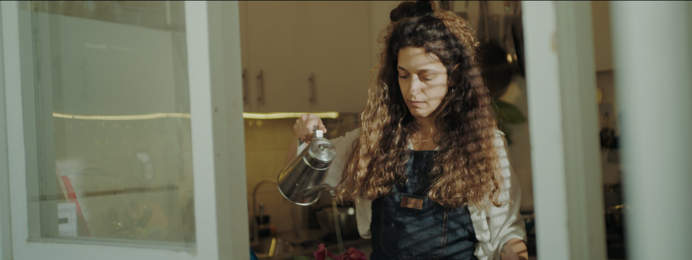
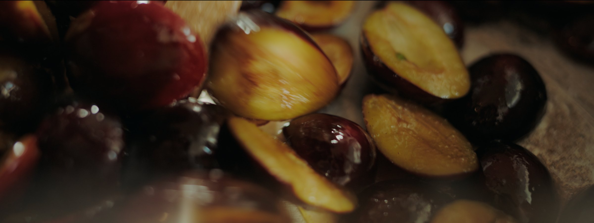
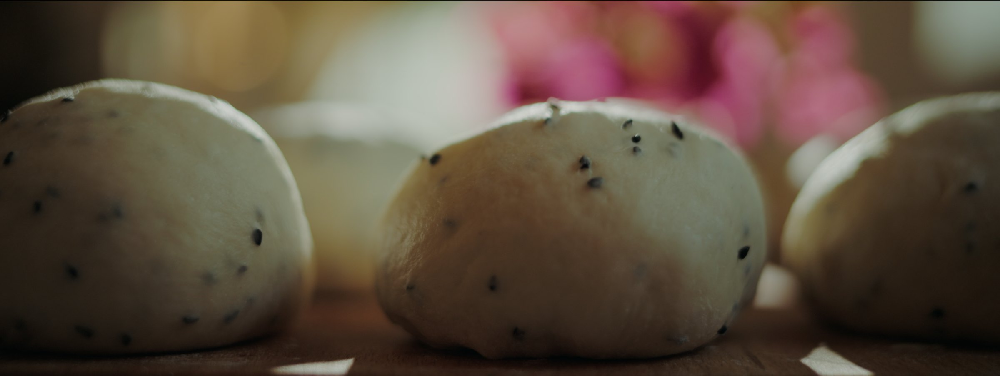

כשאני חושבת מה ייכנס לתפריט השבוע, אני קודם כל מדמיינת מה בא לי לאכול הסופ״ש. When I think about what will go on the menu this week, I first imagine what I feel like eating this weekend.

משם אני חושבת ומחשבת איזה חומרי גלם יעבדו הכי טוב ביחד בעונה הזאת, בשבוע הזה, ביום הזה — וישר אני יוצאת ללקט אותם. מי שמכיר אותי יודע שאני לא ממש מחפשת להכין את מה שכולם מכירים, אלא טעמים ושילובים שגורמים לחשוב, לעצור באמצע הביס ולהגיד אשכרה. From there I think through which ingredients will work best together this season, this week, this day — and I go straight out to gather them. Anyone who knows me knows I'm not really looking to make what everyone already knows, but flavors and combinations that make you think, stop mid-bite, and say, seriously.

הפילוסופיה שלי כטבחית ואופה היא שאוכל יכול להיות טעים ברמות לא הגיוניות וגם להיות מאוד נכון ונעים לבטן. בואו נגיד שאם אתם מחפשים מושחת, זה לא המקום. אבל זה כן המקום ללחמי מחמצת, מאפים ומתוקים שבאמת נכונים לגוף ובאותה עת טעימים לא נורמלי. זאת מאפייה של אישה אחת, ככה שאתם יכולים לדעת בוודאות שמה שאתם בוחרים נעשה באהבה עמוקה והנאה ענקית למקצוע ולאהבת אנשים ואוכל טעים. מה שכן, בגלל זה הכמויות גם מאוד מוגבלות, והכל נגמר מהר. אז יאללה. My philosophy as a cook and a baker is that food can be outrageously delicious and also genuinely good and gentle on your stomach. Let's just say if you're looking for decadent, this isn't the place. But it is the place for sourdough breads, pastries and sweets that are truly good for the body and, at the same time, insanely tasty. This is a one-woman bakery, so you can know for certain that whatever you choose was made with deep love and huge enjoyment of the craft and of loving people and tasty food. That said, because of this the quantities are also very limited, and it all runs out fast. So, yalla.
לתפריט והזמנות Menu & orders